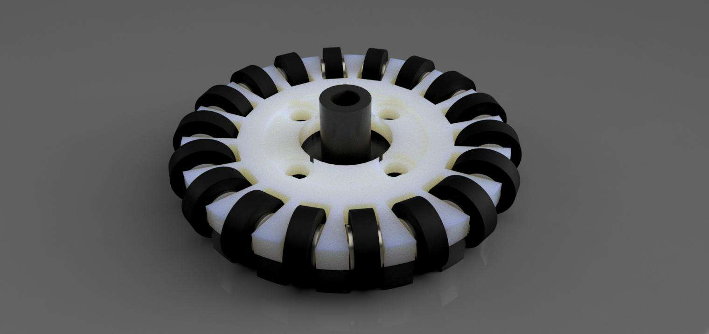
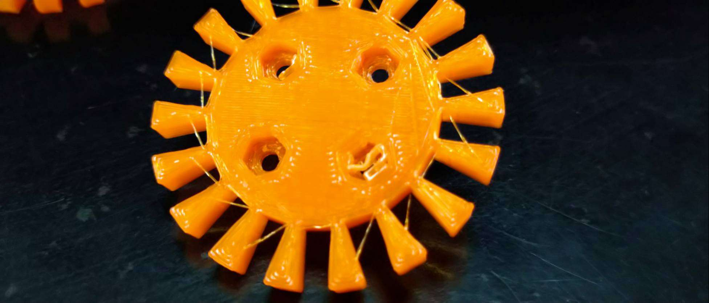
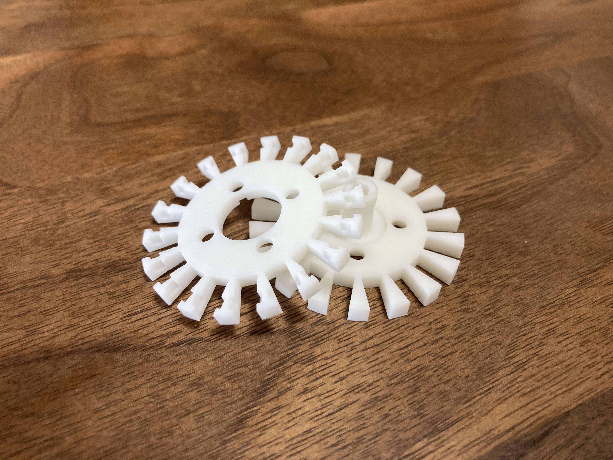

TOINIOT² Blog
JLCPCBからのお届け物です。
今回の記事では、私たちTOINIOT²のスポンサーになっていただいているJLCPCBに3Dプリント部品を注文してみた、ということで届いた部品のレビュー兼感想です。先に結論言っちゃいます。めっちゃいいです。マジで。一回試してみてほしい。
2023-08-04 Writer: 010
こんにちは。TOINIOT²です。久しぶりの記事更新となってしまいましたが、中の人は生きています。もっと色々発信できるよう頑張ります!（毎回言ってる）
さて、今回の記事は私たちのチームのスポンサーになっていただいているJLCPCB様に発注をさせてもらったお話です。今回は基板...ではなく、3Dプリント部品の発注をさせていただきました。基板の方は昨年から何度も発注させていただきお世話になりましたが、実は3Dプリントの部品を発注するのは初めてです。
では、3Dプリント部品では一体何を発注したのか。
それは...

オムニホイールです。（写真はFusion360のレンダリング機能で作成）
ちょっと形が変わってます。中の人が頑張って設計しました。（笑）
どういう特徴があるのかは、また別の機会に...。
ところで、僕たちの学校には3Dプリンターが何台かあります。実際、去年RCJに出場したときに使用したオムニホイールは、学校のプリンターを使用して作りました。
その流れで、今年も学校で作ってみたところ...

はい。いくら何でも構造が複雑すぎました。どう頑張っても片方の面のサポート材がうまく取れず、使い物になりませんでした。
そこで、われらの良きライバル、ToinSigmaに相談したところ、
「JLCPCBの3Dプリント、めっちゃいいで。」
とのことでした。
早速注文画面を開きました。よく見ると、いつもの基板発注のページの横に3Dプリントの文字があるではないですか。クリックしてみると...
レジン、PLA、金属...
「種類多！」
プリントの材質の品揃えにとても驚きました。特に、金属で3Dプリントできるというのがびっくりです。今度機会があればそのレビューもしてみますね。
ここからは、届いた後のお話です。

えー、すごいです。見たことないくらいきれいです。学校のプリンターだと、サポート材をとったり、プリンター内部のねじがゆるんで積層がズレてしまっていたり、とどうしてもトラブルが起きて設計通りに印刷されないことがあります（もちろん学校のモノも使えます。かなり助かってますが、そのうえで、です。）ですが、JLCPCBに発注するだけで、こんなにきれいなものが、設計によっては1コ1ドルで手に入るんです。
そして、僕たちは今回材質に 9000R Resin というものを試してみたのですが、耐久性もバッチリです。相手の機体とぶつかっても、これなら壊れる心配がありません！
とまぁここまで色々なことを書かせてもらいましたが、とにかく言いたいことは一つだけ。
JLCPCB様、本当にありがとうございました！ そして、これからもよろしくお願いします！
皆さんもぜひ、JLCPCBの3Dプリントを1度試してみてください！では、今回の記事はこのあたりで。また次の記事で会えるのを楽しみにしています。